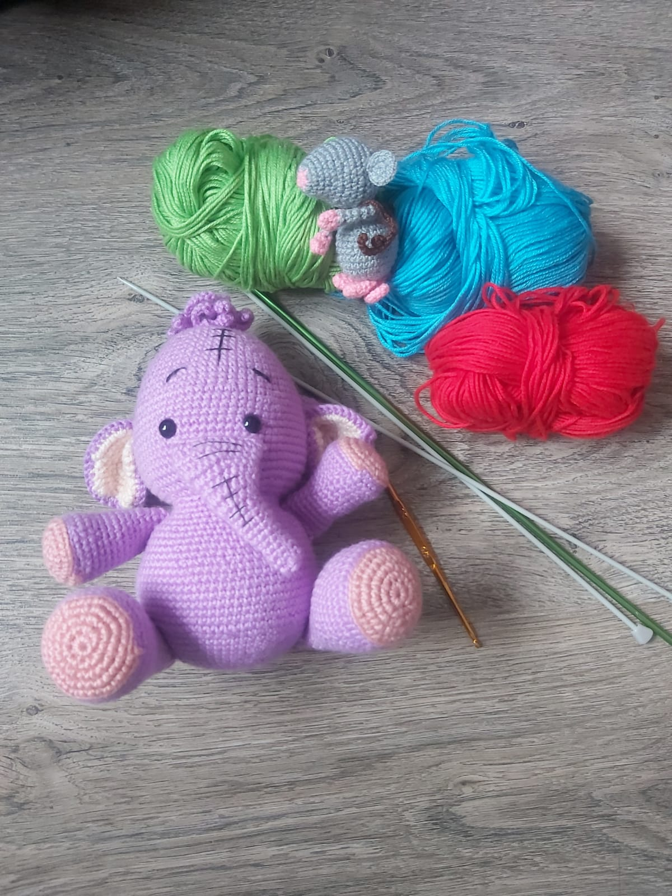
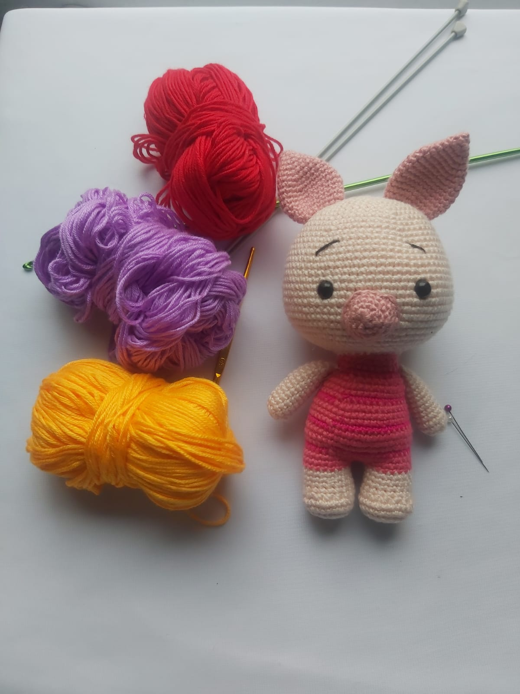
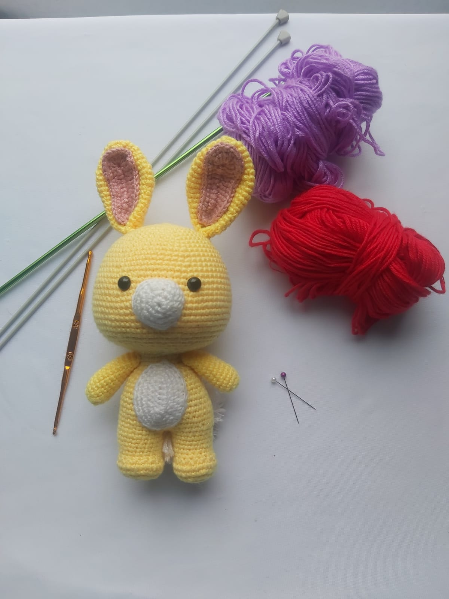
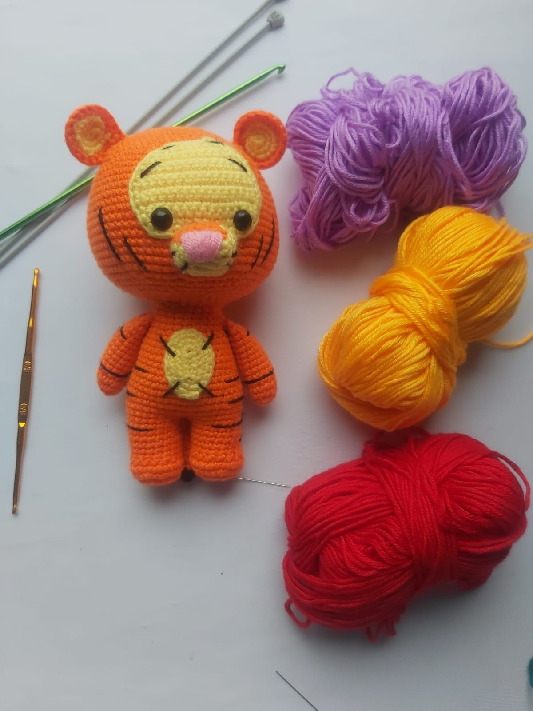

Los amigurumis son adorables muñecos tejidos a mano.
Según la tradición japonesa cada Amigurumi posee un alma, el cual nos acompañará y será nuestro amiguito y confidente de por vida, proporcionándonos protección y consuelo cuando nos sintamos tristes o confundidos.
NUESTROS PRODUCTOS
Colección winnie pooh

Ígor
Muñecos Lumpy 15 centímetros, colección Winnie the Pooh, lana hipoalergica, ojitos de seguridad Para edades entre los 6 meses

Piglet
Muñecos Lumpy 15 centímetros, colección Winnie the Pooh, lana hipoalergica, ojitos de seguridad Para edades entre los 6 meses

Conejo
Muñecos Lumpy 15 centímetros, colección Winnie the Pooh, lana hipoalergica, ojitos de seguridad Para edades entre los 6 meses

Tigger
Muñecos Lumpy 15 centímetros, colección Winnie the Pooh, lana hipoalergica, ojitos de seguridad Para edades entre los 6 meses